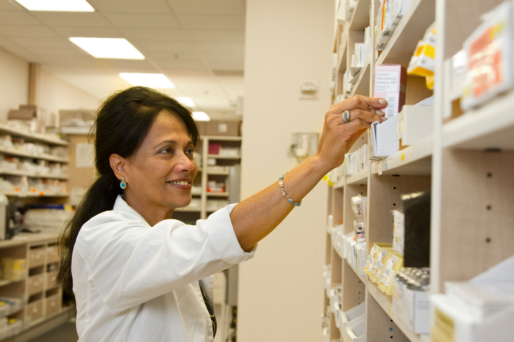
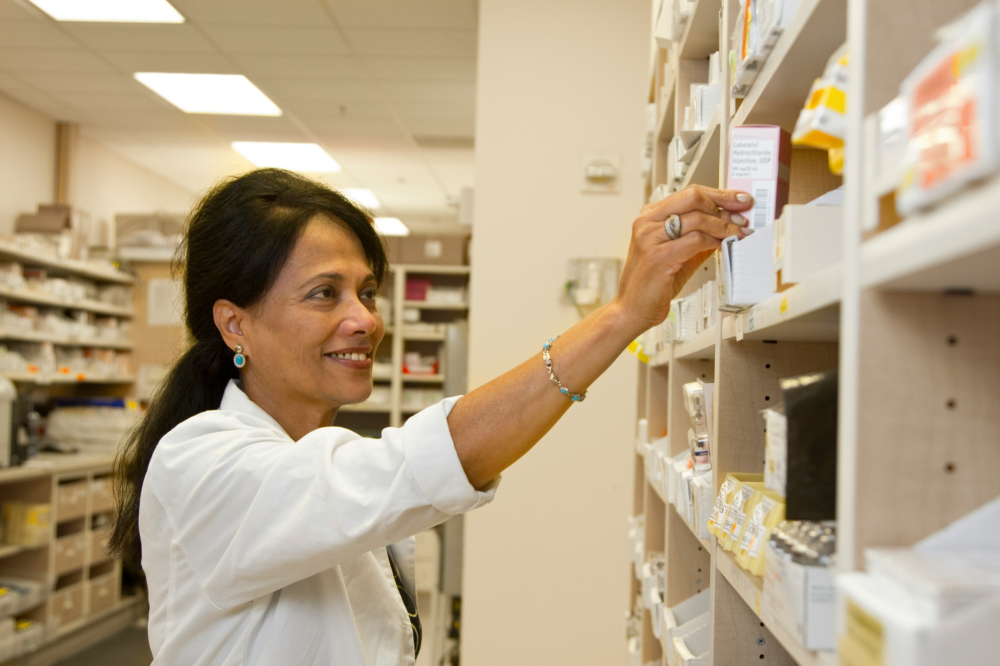

Tu Veterinaria de Confianza
Atención las 24 hs, los 365 días al año

Nuestro equipo está formado por profesionales unidos por el amor hacia los animales en general y los animales de compañía en particular. Este equipo de veterinarios altamente cualificados y especializados trabaja bajo la coordinación de la Doctora Beatriz Aurora Pinzon Solano, fundadora de la clínica veterinaria en 2010. El compromiso del equipo profesional se basa en dar calidad de vida a tu mascota.

 
